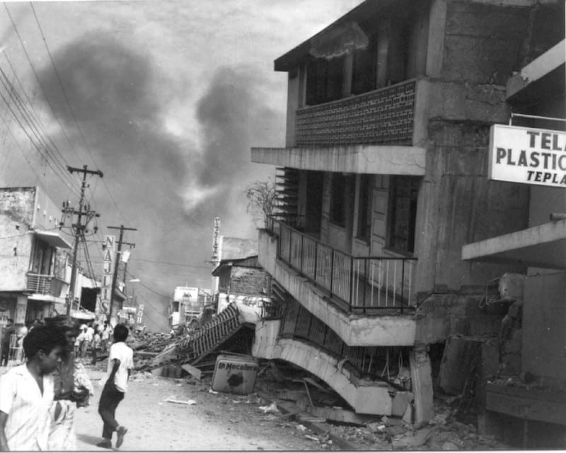
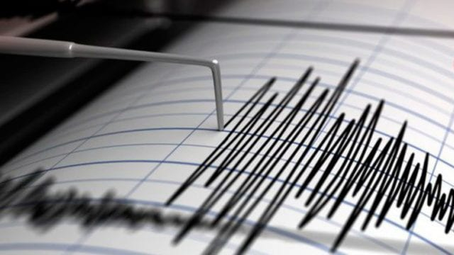

Contexto Geológico de Nicaragua
Nicaragua se encuentra en una región de alta actividad sísmica y volcánica debido a su ubicación en el límite de la Placa de Cocos y la Placa del Caribe. Esta zona, conocida como el "Cinturón de Fuego del Pacífico", provoca sismos de subducción, sismos volcánicos y sismos locales en fallas geológicas.
Sismos Históricos Importantes
La historia de Nicaragua está marcada por sismos devastadores que han influido en su desarrollo urbano y en la conciencia de su población. Conocerlos es fundamental para entender la importancia de la prevención.
- **Terremoto de Managua (1972):** Con una magnitud de 6.2 en la escala de Richter, este sismo destruyó casi por completo el centro de la capital y causó miles de víctimas.
- **Terremoto de Managua (1931):** Un sismo de 5.6 de magnitud que también destruyó gran parte de la ciudad y provocó un gran incendio.
- **Terremoto de Nandaime (2000):** Un sismo de 6.0 que afectó principalmente la zona sur del país, causando daños estructurales significativos en viviendas y edificios.
Vigilancia y Monitoreo Sísmico
El Instituto Nicaragüense de Estudios Territoriales (INETER) es la institución encargada de la vigilancia sísmica y volcánica en el país. Su red de estaciones monitorea la actividad constantemente para proporcionar información vital a la población y a las autoridades en caso de una emergencia.
